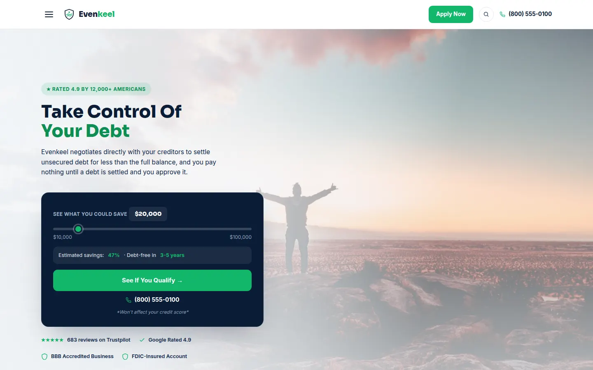

A full debt settlement brand: marketing pages, a savings calculator, a blog, an e-sign email, and a client portal for tracking deposits and settlements.
I design and build landing pages, client portals, product launches, and app prototypes. Every project below is a working page you can click through.

A full debt settlement brand: marketing pages, a savings calculator, a blog, an e-sign email, and a client portal for tracking deposits and settlements.

A furniture shopping app, from problem statement and persona to wireframes, a design system, and a clickable prototype that runs in the browser.

A launch page for a 16-inch laptop. Sticky section nav with scrollspy, a pinned display story, swipeable feature cards, and an FAQ.

A dark page for a household protection plan. An animated network hero, an eight-layer feature explorer, pricing tiers, and a three-step setup flow.

The same product category in a lighter direction. A circuit-trace hero, alternating use-case rows, compliance badges, and member reviews.

A developer-facing page for a ledger and tokenization API. Code samples sit next to uptime stats, and a vault panel shows card data swapped for tokens.
About
I work where design meets the browser. I sketch the layout, pick the type and color, then write the HTML and CSS myself, so what you approve is what ships.
Most of my work is for finance and security brands, where trust has to show up in the details: clear pricing, honest disclaimers, and pages that stay fast on a phone.